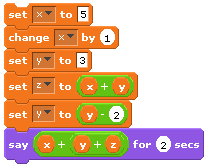
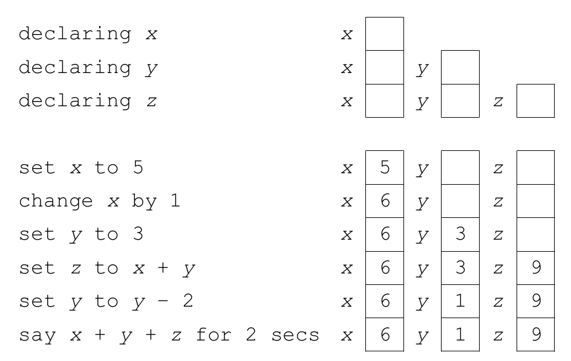
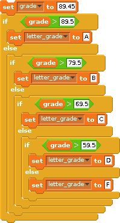
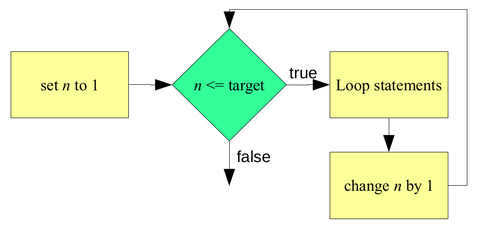
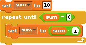

Primary Control Constructs
What makes computers more than simple calculating devices is their ability to respond in different ways to different situations. In order to create programs capable of solving more complex tasks we need to examine how the basic instructions we have studied can be organized into higher-level constructs. Recall that the vast majority of imperative programming languages support three types of control constructs which are used to group individual statements together and specify the conditions under which they will be executed. Again, these control constructs are: sequence, selection, and repetition.
Recall from a previous RPi activity that sequence requires that the individual statements of a program be executed one after another, in the order that they appear in the program. Sequence is defined implicitly by the physical order of the statements. It does not require an explicit program structure. This is related to our previous discussion on control flow.
Selection constructs contain one or more blocks of statements and specify the conditions under which the blocks should be executed.
Basically, selection allows a human programmer to include within a program one or more blocks of optional code along with some tests that the program can use to determine which one of the blocks to perform. Selection allows imperative programs to choose which particular set of actions to perform, based on the conditions that exist at the time the construct is encountered during program execution.
Repetition constructs contain exactly one block of statements together with a mechanism for repeating the statements within the block some number of times.
There are two major types of repetition: iteration and recursion.
Iteration, which is usually implemented directly in a programming language as an explicit program structure, often involves repeating a block of statements either:
while some condition is true, or
some fixed number of times.
Recursion involves a subprogram (e.g., a function) that makes reference to itself. As with sequence, recursion does not normally have an explicit program construct associated with it.
Sequence
Sequence is the most basic control construct. It is the glue that holds the individual statements of a program together. Yet, when students who are new to programming try to understand how a particular program works, they often just glance over the various statements making up the program to get a feel for what it does rather than methodically tracing through the sequence of actions it performs. One reason such an approach is tempting is because students tend to believe they can figure out what a program is supposed to do based on contextual clues such as the meaning of variable names and character strings.
While it is often possible to gain a superficial knowledge of a program simply by reading it, this approach will not give you the kind of detailed understanding that is frequently required to accurately predict a program’s output. Being able to carefully trace through a program to determine exactly what it does is an important skill. Failure to carefully follow the sequence of instructions often leads to confusion when trying to understand the behavior of a program.
The following Scratch program illustrates the importance of sequence. It contains a little do nothing program that displays the value 16. What makes this program interesting is not so much what its output is, as the way in which that output is computed. Without carefully tracing through the program, one statement at a time, it would be difficult to correctly predict the final output generated by the program.

Note that the variables x, y, and z were declared in the variables blocks group. The following illustrates the state of the program’s memory after executing each line of code. After performing the first declaration, the program knows only about the variable x. After the second declaration, it knows of x and y, and after the third, it knows of x, y, and z. Since these variables have not yet been assigned values, their values are considered to be undefined at this point.

16In Python, sequence is implemented in a manner very similar to Scratch: we simply place statements in the order that we wish them to be executed. Here’s the program above in Python:
x = 5
x += 1
y = 3
z = x + y
y -= 2
print(x + y + z)Sequence represents the natural order of statement execution. It represents a top-down, sequential order where lines of code are evaluated one after the other.
Selection
Selection statements give imperative languages the ability to make choices based on the results of certain condition tests. These condition tests take the form of Boolean expressions, which are expressions that evaluate to either True or False. As discussed earlier, there are various types of Boolean expressions, but most of the time condition tests are based on relational operators. Recall that relational operators compare two expressions of like type to determine whether their values satisfy some criterion. Selection statements use the results of Boolean expressions to choose which sequence of actions to perform next. The general form of all Boolean expressions:
expression relational_operator expressionBoth Scratch and Python support two different selection statements: if-else and if. An if-else statement allows a program to make a two-way choice based on the result of a Boolean expression. If-else statements specify a Boolean expression and two separate blocks of code: one that is to be executed if the expression is true, the other to be executed if the expression is false. Recall that, in Scratch, selection constructs contain one or more blocks of statements and specify the conditions under which the blocks should be executed.
Here’s an example:

Here is an equivalent snippet of code in Python
grade = 89.45
if (grade > 89.5):
letter_grade = "A"
else:
if (grade > 79.5):
letter_grade = "B"
else:
if (grade > 69.5):
letter_grade = "C"
else:
if (grade > 59.5):
letter_grade = "D"
else:
letter_grade = "F"
print(f"{grade} is a/an {letter_grade}")Note the structure of an if-else statement in Python:
if (condition):
# this is the if body i.e. statements that will be executed if the
# condition is True
else:
# this is the else body i.e. statements that will be executed if the
# condition is False
# Any statements UNindented are NO longer a part of the appropriate
# if-else block.Note the colons after the condition and the else, as well as the indentation of both the true and false parts/blocks. Both are vital in indicating where the True and False sections of the if-else statement begin and end!
Note in the grade/letter_grade example above that there are a few nested if-else statements i.e. if-else statements inside of other if-else statements. Python provides a more elegant way to do the same thing using the elif clause (which stands for else if):
grade = 67.4
if (grade > 89.5):
letter_grade = "A"
elif (grade > 79.5):
letter_grade = "B"
elif (grade > 69.5):
letter_grade = "C"
elif (grade > 59.5):
letter_grade = "D"
else:
letter_grade = "F"
print(f"{grade} is a/an {letter_grade}")Note the indentation looks a little different when you use elif statements compared to nested if-else statements. This is because all blocks of the elif statements are at the same level. This is in contrast to nested if-else blocks where an entire if-else block is contained within either the if or else of another if-else block.
The if statement is similar to the if-else statement except that it does not include an else block. That is, it only specifies what to do if the Boolean expression is true.
The structure of an if statement in Python is:
if (condition):
# this is the if body i.e. statements that will only be executed if
# the condition is True
# Any statements UNindented are NO longer a part of the if block i.e.
# any statements here will be executed whether or not the condition was
# True.Note the colon and indentation. As in the if-else statement, both are vital in indicating where the true section of the if statement begins and ends!
If statements are generally used by programmers to allow their programs to detect and handle conditions that require special, optional or additional processing. This is in contrast to if-else statements, which can be viewed as selecting between two (or more) mutually exclusive choices.
if (age >= 62):
print("You are a senior citizen")It is worth mentioning that the conditions in both if and if-else statements are not required to be placed in parenthesis in Python. However, we believe getting used to doing so will make your transition to other programming languages easier because many of them require that the conditions of their if and if-else statements are placed within parenthesis.
if condition:
# do something
# is the exact same asif (condition):
# do something
# this statement in Python.Repetition
Repetition is the name given to the class of control constructs that allow computer programs to repeat a task over and over. This is useful, particularly when considering the idea of solving problems by decomposing them into repeatable steps. There are two primary forms of repetition: iteration and recursion.
Iteration
Recall that Scratch supports iteration in two main forms: the repeat loop and the forever loop. The repeat loop has two forms: repeat-until and repeat-n (where n is some fixed or known number of times). The repeat-until loop is condition-based; that is, it executes the statements of the loop until a condition becomes true. The repeat-n loop is count-based; that is, it executes the statements of the loop n times.
In a repeat-until loop, the Boolean expression is first evaluated. If it evaluates to false, the loop statements are executed; otherwise, the loop halts. Here’s an example in pseudocode:
total = 0
repeat
num = prompt for a positive number (-1 to quit)
if num > 0
total = total + num
until num < 0
display totalThis program asks the user to enter a positive number or -1. If a positive number is entered, it is added to a running total. If -1 is entered, the program displays the total and halts. The repeat-until loop is used here to repeat the process of asking the user for input until the value entered is less than 0. It is interesting to note that although the program instructs users to enter -1 to quit, the condition that controls the loop is actually num < 0 (which will be true for any negative number). Thus, the loop will actually terminate whenever the user enters any number less than zero (e.g., -5).
In Scratch, the repeat-n loop executes the loop statements a fixed (or known) number of times. Recall the flowchart for the repeat-n loop:

Although the programmer does not have access to a variable that counts the specified number of times (shown as n in the figure above), the process works in this manner. A counter is initially set to 1. A Boolean expression is then evaluated that checks to see if that counter is less than or equal to the target value (e.g., 10). If so, the loop statements execute. Once the loop statements have completed, the counter is incremented, and the expression is reevaluated.
Like Scratch, Python provides several constructs for repetition. The while loop is the most general one, and allows for both event-control (e.g., repeat-until) and count-control (e.g., repeat-n). Comparing this to Scratch, the while loop is similar to the repeat-until and repeat-n blocks. Here is a simple example in Scratch:

This simple script initializes a variable, sum, to 10. It then repeatedly decrements it by one until it is 0. This can be accomplished in Python using a while loop. The structure of a while loop in Python is:
while (condition):
# statements that will be executed while the condition is True. To
# get out of the while block, the condition needs to become False by
# the end of block during one of its iterations.
# statements that will be executed once the while loop is completed.Similar to if and if-else conditions, the while condition can be placed within or without parenthesis in Python.
Below is a simple python program that will change the value of sum from 10 to 0 by decrementing it by 1 multiple times. See if you can follow the code to see how it does it and produces the shown output.
sum = 10
print(f"Before the loop: sum is {sum}")
while (sum > 0):
print(f"sum is now {sum}")
sum -= 1
print(f"After the loop: sum is {sum}")There is a slight difference between the condition in Scratch’s repeat-until loop and the condition in Python’s while loop: the condition in the while loop needs to be true to remain in the loop; the loop is terminated whenever the condition evaluates to false. Conversely, the condition in the repeat-until loop should be false to remain in the loop. The repeat-until loop is terminated whenever the condition evaluates to true.
To implement Scratch’s repeat-n loop in Python with a while loop, we need to create a counter:
counter = 0 # a variable to keep track of how many iterations the
# while loop will be executing.
sum = 0
print(f"Before the loop: counter = {counter}, sum = {sum}")
while (counter < 10):
sum += 2 # execute the body of the loop i.e. whatever
# task you want to execute repeatedly...
counter += 1 # and then increment the counter by 1
print(f"After the loop: counter = {counter}, sum = {sum}")Before leaving the topic of iteration, we should say a few words about the idea of nested loops. Two loops are nested when one loop appears within the body of another loop. This is quite common, and in fact may be carried out to an arbitrary depth. However, to keep the logic of a program from becoming too hard to follow, programmers try to limit nesting depths to no more than three or four levels deep.
The following Python program displays the multiplication table. This program consists of two nested while loops. The loop variable of the outer loop is i, and the loop variable for the inner loop is j. Both of these loops count from one to nine:
i = 1 # variable to keep track of the outer loop
while (i < 10):
j = 1 # a variable to keep track of the inner loop. Note that
# this variable will be reset to 1 every time the outer loop
# restarts.
while (j < 10):
print(f"{i} x {j} = {i*j}")
j += 1 # increment the variable for the inner loop
i += 1 # increment the variable for the outer loopThe program’s output is of the form i x j = k, where i and j represent the values of the respective variables, and k is their product. Notice that j runs through its entire range, from 1 to 9, before i is incremented by 1. This behavior is easy to understand when you think about the structure of the program.
Let’s look at the outer loop. What does it do? Well, first i is initialized to 1, it is then compared to 10, and since i is less than 10, the first iteration of the loop commences. The first statement of the loop initializes j to 1. The next statement is another while loop. In order for the first iteration of the outer loop to complete, the program must execute this inner loop to completion. Note that the last statement in each while loop is a statement that increments its respective variable. Recall that the loops counter needs to change in order for the condition to eventually be false so that the execution can exit the while loop.
The process repeats until all 81 entries in the multiplication table, from 1 x 1 to 9 x 9, are computed and displayed.
We conclude this section with the following Python program:
bottles = 99
while (bottles > 0):
print(str(bottles) + " bottles of beer on the wall.")
print(str(bottles) + " bottles of beer.")
print("Take one down, pass it around.")
bottles -= 1
print(str(bottles) + " bottles of beer on the wall.")
print()This program displays the lyrics to the song, “99 Bottles of Beer on the Wall.” As you most likely know, the song begins as follows:
99 bottles of beer on the wall.
99 bottles of beer.
Take one down, pass it around.
98 bottles of beer on the wall.
98 bottles of beer on the wall.
98 bottles of beer.
Take one down, pass it around.
97 bottles of beer on the wall.It continues in this manner, with one less bottle in each verse, until it finally runs out of beer. An interesting feature of the program is that it decrements bottles in the middle of the loop rather than at the end. You should trace through the program with a few bottles to convince yourself that it does work properly. One thing you will probably notice as you do so is that when the program gets down to one beer, it reports that as “1 bottles of beer on the wall.” While this lack of grammatical correctness might not seem like such a big deal, especially after 98 beers, we can correct it easily with an if statement.
See if you can write out the “Bottles of Beer” program above such that it is grammatically correct throughout the entire song.
Recursion
Recursion is a type of repetition that is implemented when a subprogram calls itself.
When a recursive call takes place, control is passed to what appears to be a brand new copy of the subprogram. This copy of the subprogram may, in turn, call another copy of the subprogram. That copy may call another copy, and so on. Eventually, these recursive calls must terminate and return control to the original calling program.
Take the “99 Bottles of Beer on the Wall” program above. It illustrated an iterative method of singing the song. Here’s an example of the same program in Python, implemented using recursion:
# a function that takes in the number of bottles as its argument,
# "sings" a verse of the song, and then calls another copy of itself
# with a smaller number of bottles.
def consumeBeers(bottles):
if (bottles > 0):
print(str(bottles) + " bottles of beer on the wall.")
print(str(bottles) + " bottles of beer.")
print("Take one down, pass it around.")
print(str(bottles - 1)+ " bottles of beer on the wall.")
print()
consumeBeers(bottles - 1)
# A simple statement to call the function the first time with the
# original number of bottles.
consumeBeers(99)At first glance you might think that this program is nearly identical to the program shown earlier. There are, however, two major differences between the two. First, instead of a while loop, this program has an if statement. Also, just before the end of the if statement, the same subprogram (consumeBeers) is called. This is the recursive call!
Note that the value of the variable bottles is decremented by 1 at the recursive call. When control enters the subprogram, the value is checked to see if it is greater than 0. This ensures that, so long as bottles is decremented each time the subprogram executes, it will eventually reach 0. When this occurs, it will cause the Boolean expression in the if statement to evaluate to false, thereby not executing its block (and calling itself again) and stopping the recursion.
One way to envision recursion is to think of it as a spiral. Each time a subprogram calls itself, we descend down a level of the spiral until we eventually reach the bottom. At that point, execution begins to unwind as the subprogram calls complete and we retrace our path back up through the various levels until finally arriving at the top level where execution began.
The recursive program above illustrates what is called tail recursion, because the recursive call is the last action taken by the subprogram. In tail recursion, there is no work to be done during the unwinding process because it was all done on the way down the spiral. In Scratch, this is the only way of implementing recursion. Python permits other forms of recursion, where the recursive call can occur before other statements.
Many students, upon learning how recursion works, worry that programs that employ this form of repetition might be very inefficient in terms of their utilization of machine resources. After all, you have all of those copies of the subprogram hanging around. The good news is that recursion is not nearly as expensive as you probably think. For one thing, only one copy of the actual subprogram code is needed. All that is reproduced during each call is the execution environment, the variables and whatnot that are used by that version of the subprogram. While it is true that recursion generally involves more overhead than iteration, recursive calls are really no more expensive than any other kind of function call. In fact, some optimizing compilers convert tail recursion into iteration so there is often no additional expense in using that form of recursion at all.
Aside from the efficiency issue, you may be wondering why programming languages would support recursion. After all, whenever the need for repetition arises the programmer could always use one of the iteration constructs. The reasons for supporting both recursion and iteration are the same as those, for example, supporting two types of selection statements (if and if-else): clarity and convenience. Some problems are simply easier to solve using recursion than iteration. For these types of problems, a recursive solution is often more compact and easier to read than an iterative one.